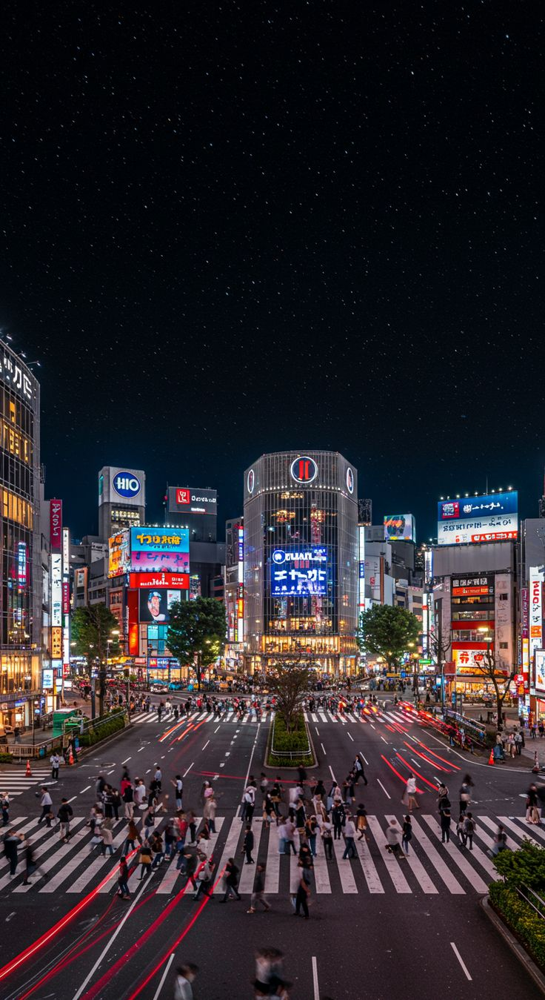
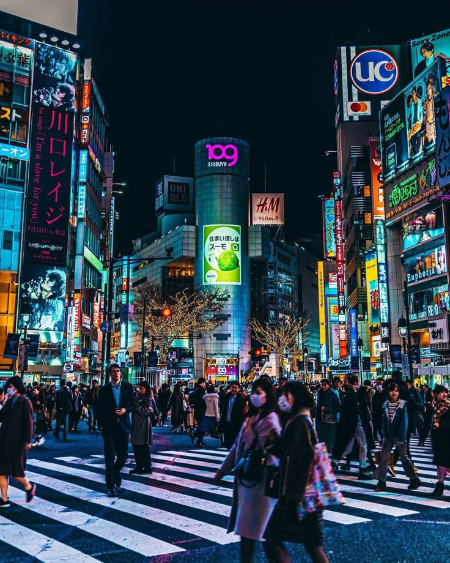

My favorite city is Tokyo. Tokyo is an amazing choice the blend of tradition and futuristic tech is on another level 😌 From the peaceful temples and cherry blossoms to anime culture, neon streets, bullet trains, and that unbelievably clean city vibe… it’s definitely a dream destination!
 